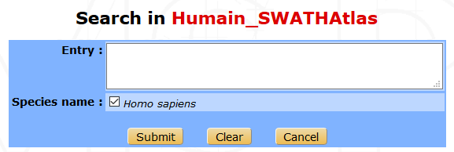
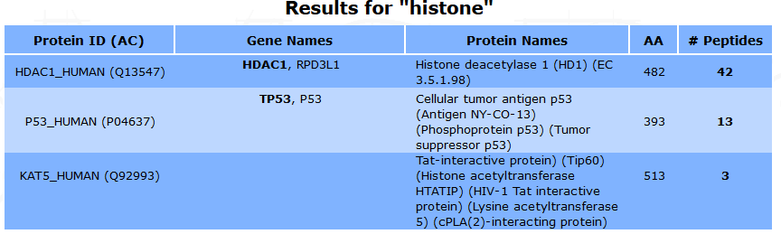
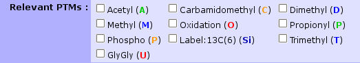

Annotation data management¶
Sequence databanks¶
The sequence databanks used by the search engines must be referenced in myProMS so that protein annotations (identifier, description, species and sequence) sometimes not present in search result files (eg. Mascot) can be retrieved from the corresponding fasta file during analysis import.
A referenced sequence databank is also associated with a specific parse rule that allows myProMS to properly match and extract the annotation from the fasta file.
Databank types¶
Multiple databank types are available in myProMS depending on the proteomic resource used to download the fasta file, corresponding to different fasta file entries:
- UniProt:
- >sp|P15311|EZRI_HUMAN Ezrin OS=Homo sapiens (Human) GN=EZR Ezrin
| UniProt - ALL | UniProt - ACC / ACC#-n | UniProt - ID | |
| Protein identifier | sp|P15311|EZRI_HUMAN | P15311 | EZRI_HUMAN |
| Description | Ezrin | ||
| Species | Homo sapiens | ||
- SWISSPROT/trEMBL #1, #2 and #3
These 3 types are equivalent of the 3 UniProt types described above except that they recognize the obsolete fasta entry format:
>sp|P15311|EZRI_HUMAN Ezrin (p81) (Cytovillin) (Villin-2) - Homo sapiens (Human)
- NCBI:
>gi|125987826|sp|P15311|EZRI_HUMAN Ezrin (p81) (Cytovillin) (Villin-2) [Homo sapiens (Human)]
| NCBInr - ALL | NCBI - GI | |
| Protein identifier | gi|125987826|sp|P15311|EZRI_HUMAN | gi|125987826 |
| Description | Ezrin (p81) (Cytovillin) (Villin-2) | |
| Species | Homo sapiens | |
- IPI:
- >IPI:IPI00843975.1|SWISS-PROT:P15311| Tax_Id=9606 Gene_Symbol=EZR Ezrin`
| Protein identifier | IPI00843975 |
| Description | Tax_Id=9606 Gene_Symbol=EZR Ezrin |
| Species | 9606 |
Warning
The IPI resource is no longer maintained. We do not recommend using fasta files from this resource with your MS search engines.
- Undefined source: Protein (User-defined)
- This type can be used as a temporary solution for any unknown or custom fasta-compatible entry: >pipe_separated_identifier_block any text
| Protein identifier | Whole identifier block |
| Description | Everything else |
| Species | None recorded |
Note
If you need you need to handle other entries type, please contact your local myProMS administrator or email to myproms@curie.fr.
Listing databanks¶
Only bioinformatician and massists/managers with granted appropriate privileges can access and manage the protein databanks.
From myProMS main window, select Annotation data and follow the Sequence databanks link.
All active databanks are listed in alphabetic order with a short summary of information as shown in the screen capture below.
From this window, you can either add a new databank, edit or delete an existing one.
<Figure of databanks list>
Adding a new databank¶
From the databank list window, click on the Add new databank button at the top or bottom of the list.
The following form will be displayed:
<Figure Add new Databank>
Fill out the form to provide information on the databank you want to add. In particular, you must select the databank type so that the server will know how to extract the protein annotation from the file. Information on the corresponding parse rule is then displayed to help insure the right databank type was selected. You must also provide a fasta file containing the protein data.
There are multiple ways to do so:
- Use a databank already referenced by Mascot: myProMS allows you to directly use fasta files stored on the Mascot server to avoid data duplication. In this case, the databank will be automatically synchronized when updated by Mascot.
- Use a file from a dedicated directory on server (e.g. file was previously uploaded by FTP or the directory is shared between local computer and server).
- Upload a fasta file from your computer.
- Download the file from the internet: You must provide an HTTP or FTP link to the file.
For the last 3 options, normal and gzip-/zip-compressed files are handled. If the databank contains both target and decoy sequences, this must be specified as well as the decoy tag used (eg. REV_).
For the first 2 options (except if a compressed file is used in the 2nd option), it is possible to test the type of annotation rules selected before actually creating the new databank: Select a databank type, the file to be used and click on the Test rules button. Annotations from up to 10 entries from the file will be extracted using the selected rules and displayed. Select another set of rules and try again if the extraction did not match your expectations.
If the databank is species-specific, it is recommended to provide the species scientific name even if already specified in the protein entry lines of the fasta file.
Click on the Save button to submit the databank creation form. Once the process is completed, you will be redirected to the databank list window.
Editing a databank¶
You can edit all information concerning an existing databank except its annotation type, the sequence file used and whether it contains decoy sequences.
From the databank list window, click on the Edit button on the right side of the databank row. A form similar of that used to add a databank will be displayed. Make the desired changes and click on the Save button to validate your changes.
You can test your annotation rules as described above for databank addition but regardless of the databank file origine.
If your databank references a Mascot file, it is possible to check if the file has been updated on the mascot server by clicking on the Check for update button. This can take up to a few minutes for large databank files such as NCBI databanks. Checking for file update is not mandatory since it will be performed automatically once the databank is used during an Analysis import.
Deleting a databank¶
We recommend to delete any databank that will no longer be used to keep the list displayed as short as possible. Deletion of a databank has no effect on the traceability information of analyses using this databank. A databank can be deleted at any time except during import of analyses using this databank.
From the databank list window, click on the Delete button on the right side of the databank row. A prompt will asked you to confirm your decision.
Spectral (SWATH) libraries management¶
Listing spectral libraries¶
From myProMS main window, select Annotation data and follow the SWATH libraries link. All available libraries are listed in alphabetic order with few informations as shown in the screenshot below. On the left side are listed all existing libraries with the possibility to delete, export, edit or update them. On the upper part of the window, you can either add a new library, merge two existing ones, or visualize running processes. You can also search if some desired proteins are existing into one library thank to the search link and restore the previous version of an updated library.
Adding a new library¶
From the libraries list window, click on the Add new spectral library button on the top of the list to display the form below.
- You need to select the following parameters in the library creation form :
- Task : You can create a new library or merge new data files with an existing library (create a new library from an existing one).
- Library name : Provide a name for the library.
- Species : Select the species scientific name to filter the databank list.
- Consensus library options : A consensus library is a spectral library in which MS2 spectrum entries with a redundant peptide sequence assignment have been collapsed into a single entry. Two options are provided for consensus library generation: a simple option that assumes that all fragment ion spectra are correctly assigned (UNSPLIT) and a more sophisticated option that additionally considers retention time when merging spectra (SPLIT).
- Files : Select the DDA data files used to generate the spectral library. Data from 3 search engines can be selected : Mascot files (.dat), X! Tandem files (.xml or .tandem.pep.xml) and Sequest (.xml). For each Mascot, X! Tandem or Sequest file you need to upload the associated mzXML file (with the same name as the Mascot, X! Tandem or Sequest file). You can upload your files from your computer, you can import them from an existing project (only for the .dat files), upload an archive, or select the files in the shared directory.
- Instrument : The mass spectrometer used to acquire the data.
- Databank : The fasta file used by the search engines (Mascot, X! Tandem and Sequest).
- Mayu options : FDR estimation with MAYU. False Discovery Rate (FDR) and number of missed cleavage can be selected.
- RT file : The file containing the list of iRT retention time reference peptides.
- Description : Optional description of the current library.
Once the form is filled, click on the Submit button to launch the spectral library creation process.
Danger
Update with the new version
Merging two library¶
Two libraries can be merged by clicking on the Merge two libraries button on the libraries list window. The displayed form requires the names of each of the 2 libraries, the name of the new library and an optional description. Clicking on Submit will fuse the selected libraries to create the new library.
Important
Only two libraries with the same iRT file, databank type and consensus library option (SPLIT or UNSPLIT) can be merged.
Editing a library¶
From the libraries list window, click on the Edit button on the right side of the library row. The following form will be displayed :
Note
Only the name and the description can be modified
Make the desired changes and click on the Submit button to save your changes.
Updating a library¶
It is also possible to extend a library using another databank-search data from the same organism. From the libraries list window, click on the Update button on the right of the library row. A form similar to the library creation one will be displayed.
Fill in the parameters and click on the Submit button to launch the update process.
Restoring the previous version of a library¶
An updated library can be downgraded by clicking on the Restore previous version button on the right of the library row on the libraries list interface. Every version of a library can be restored by consecutive downgrades.
Searching for proteins in a library¶
Another available option is to check whether a protein of interest is present in a library and visualize the associated peptides by clicking on the Search button of the desired library, on the libraries list window.
Several proteins can be searched at the same time by inserting the accession names, the protein id or the names of the proteins (one per line or separated by either comma or a space character) in the following form.
All the selected terms are searched beforehand in Uniprot, and a list of proteins is displayed. Some information such as the protein name, id, accession number, length and corresponding gene names are shown. The number of associated peptides identified is also indicated.
The peptide list and the protein’s sequence can be displayed by clicking on the number in the #Peptides column.
Some information about each peptide such as sequence, modifications, position on the protein, M/Z, charge, IRT time and specificity are shown.
Exporting a library¶
You can export a library to use it in a quantification software. From the libraries list interface, click on the Export button to display the export form.
- You have to fill in the following parameters :
- Export format : The library can be exported for PeakView or for OpenSWATH, or you can download the final format of the library (sptxt).
- Mass range of fragment ions : Lower and upper mass limits of fragment ions. (min=350 and max=2000 by default).
- Ion series and charge : The ion desired type (a, b, c, x, y, or z) and charge separated by a comma. (charge=1+ and 2+ by default).
- Number of ions per peptide : Minimum and maximum number of ions per peptide. (min=3 and max=20 by default).
- Files :
- Windows SWATH file : Upload the file that contain the SWATH window scheme that has been used for SWATH data acquisition.
- File with modifications delta mass : Optional file containing the modifications not specified by default.
- Labelling file : Optional file containing the amino acid isotopic labelling mass shifts. If this option is used, heavy transitions will be generated.
- Fasta file : Optional databank fasta file used to relate peptides to their proteins.
- Other options : You can select another optional options such as the maximum permissible error, the time scale, the UIS order (calculated when using switching modification; if -1 is set, all transitions for each isoform will be reported; default : 2), or the list of allowed fragment mass modifications.
- Protein list : You can select a file containing a protein list to export just these proteins from the library.
Then you can click on the Submit button to launch the export process. Once the process is complete, you can download the final file with a download link that will appear.
Deleting a spectral library¶
A library can be deleted from the list window (by clicking on the Delete button of the corresponding library) only if this library was not used to create another library (merge option, in that case, a prompt will inform you).
GO files management¶
GO analyses require two types of GO files: an ontology file and an annotation file. These files are not project-specific and are thus managed globally in myProMS.
From myProMS main window, select Annotation data and follow the GO annotations link to display the list of GO files recorded.
Note
Only bioinformaticians and authorized massists/managers can manage GO files
Ontology files¶
Ontology files contain the GO terms identifiers, description and relationships between. To add a new ontology file, click on Add new Gene Ontology file:
- The displayed form requires the following information:
Name: A relevant name for the ontology. This name will be displayed in all GO analysis starting forms in ontology selecting section.
File: The file containing the ontology must be in OBO format (not XML nor database dump). Daily updated ontology files can be fetched from GO website. The file can be uploaded directly from user computer or directly retrieved from remote FTP by writing its full URL (e.g. ftp://ftp.geneontology.org/pub/go/ontology/obo_format_1_2/gene_ontology.1_2.obo).
Scope: Specify if the ontology file contains the full gene ontology or a slim version.
Note
A slim version gives a broad overview of the ontology content without the detail of the specific fine grained terms. If a slim file is used, make sure to select the slim option.
To be able to use a slim ontology for GO analyses, at least one full ontology file must have been also recorded to allows myProMS to reconstructs missing associations between proteins and the GO terms recorded in the slim file.
Warning
Running a slim GO analysis without a corresponding full ontology will cause an error
Saved ontologies can be edited. If the file was retrieved by FTP and a most recent version available on the distant server, it can be downloaded again directly by clicking on Update file.
Annotation files¶
Annotation files contains mapping of protein identifiers to GO terms. They are species-specific and must be in Gene Association File (GAF) format. A large number of updated annotation files for many species can be fetched from the Uniprot-GOA database. To add a new annotation, click on Add new annotation file:
- The displayed form requires the following information:
Name: A relevant name for the annotation, that will be displayed on each GO analysis starting form in annotation selection section.
Description: An optional description for the annotation.
Species: Select the targeted species from the list of available ones (See Species below for more information).
File: file can be uploaded from your computer or retrieved remotely from a FTP server (e.g. ftp://ftp.ebi.ac.uk/pub/databases/GO/goa/HUMAN/gene_association.goa_human.gz for the human annotation file).
Identifier used: Select the protein identifier that must be used in myProMS to match the annotation’s one (eg: select Uniprot ID or Uniprot AC for Uniprot-GOA files). If “Default” is selected, the default protein identifier displayed in myProMS will be used.
Warning
Identifier must be set carefully to insure proper GO annotation mapping
Species¶
myProMS automatically records the species associated with any protein validated. Because different strains or variants of the same species are also recorded, it is necessary to manually link these entries to the same reference species. Furthermore, reference species must be recorded for Gene Ontology analyses. A species management section is provided so that bioinformaticians and authorized massists/managers can manually record or correct species information. By default, a list of 5 model organisms species data is provided with myProMS as reference.
Listing species¶
From myProMS main window, select Annotation data and follow the Species link to access the species management interface.
<Figure Species list>
As shown is the above screen capture, a subset of species can be listed either by scientific or common name by selecting the appropriate initial letter in one of the 2 alphabets displayed.
Adding or editing a species¶
A species can be added or edited by clicking on “Add species“ or “Edit” buttons respectively. The following form is then displayed:
<Figure Add/edit species>
The common name, scientific name and taxonID fields are mandatory. A link to the NCBI Taxonomy resource is provided to help you find this information if not known. You can either set this species as reference by checking the Is reference or link it to a reference one In addition an optional field allows you to link any species with a reference one by selecting a target species in the drop-down menu.
Deleting a species¶
A species can be deleted from the list interface (by clicking on the Delete button of the corresponding species) only if this species is no longer associated with validated protein, not set as reference species nor used in a GO analysis.
Sequence modifications¶
myProMS automatically records the post-translational modifications (PTMs) found in imported analyses on protein sequences. Once an analysis has been imported, PTMs found on this analysis are added to the list and you can edit the properties of those PTMs. myProMS keeps track of every imported modifications and displays by ascending name as defined on UNIMOD website.
In this list, all PTMs are depicted by five informations ; names (PSI-MS and interim name), description, specificity and status (red or green). The specificity describes on which residue the PTM tends to occur. It could be on a specific residue including or not a context (like “Any N-term”, “Protein N-term”,etc.).

The status displayed on the upper left corner by a circle tells if a PTM is valid or not. To be valid, a PTM should be characterized by a monoisotopic and an average mass like the ones defined on UNIMOD website. If a PTM is not valid (), it means that myProMS could not retrieved this PTM through the UNIMOD current list of PTMs. The origin of that issue comes from one reason : you entered a “home-named” modification that is not referenced in UNIMOD.
- Two solutions exist to solve this issue :
- If this modification was already imported on another referenced name, you should merge this “home-named” modification to this one by editing the non-valid PTM. In the future, myProMS will automatically applies to this “home-named” modification the properties of the referenced one.
- If this modification was not imported through another name, you should edit the PTM and provide mass and specificity.
Make sure that all PTMs retrieved are valid in order to avoid the other features available in myProMS to give wrong output (like fragmentation table of peptides for example).
Editing or merging PTMs¶
A PTM can be edited by clicking on Edit button.
In this mode, you can update the description or the delta-mass of this PTM. A link to UNIMOD is provided by giving the Unimod Accession number. Specificity can be updated given your expertise on the PTM and reviews articles you may have read.
The option Merge with gives the opportunity to merge two PTMs into one single entry. This could be useful if you wish to give an alternative name to a modification. Select the modification you want to merge with the current PTM and click on Save. This action will add the name of the current modification to the list of alternative names of the one selected.
For PTMs that you want to make appear in your projects and give special attention to, you need to enter a code (usually, a single letter) and a color. Those PTMs will become relevant and will be selectable in every project you manage.
Here is a list of relevant PTMs and their associated code-color designation:
Note
For more information on that topic, please, see Project Creation.